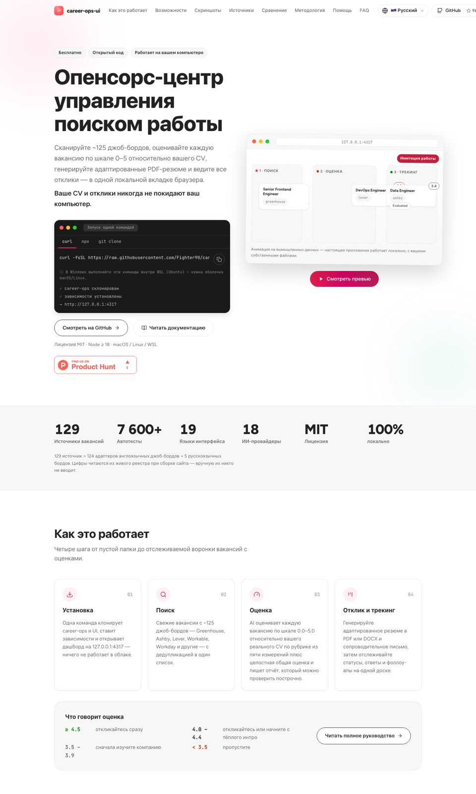
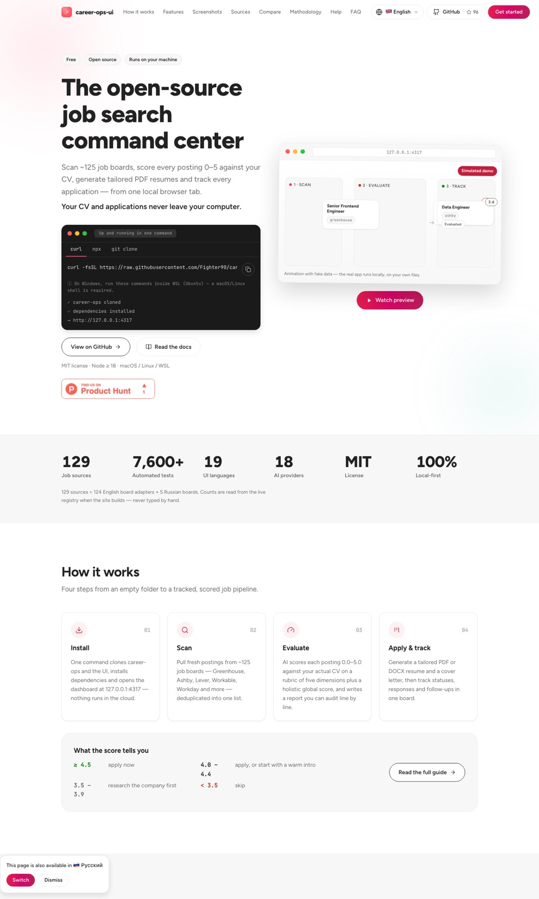
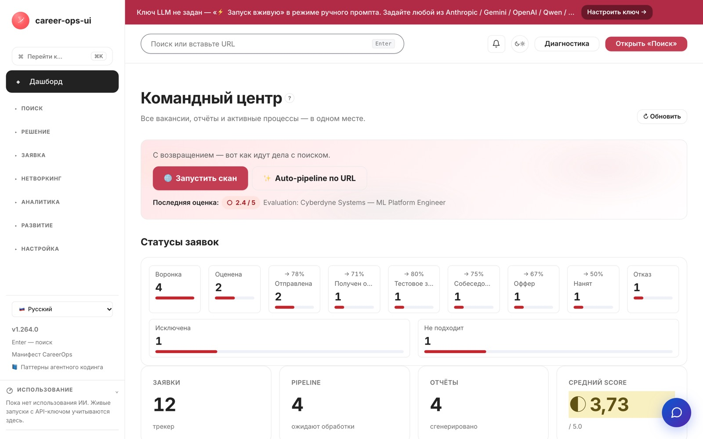
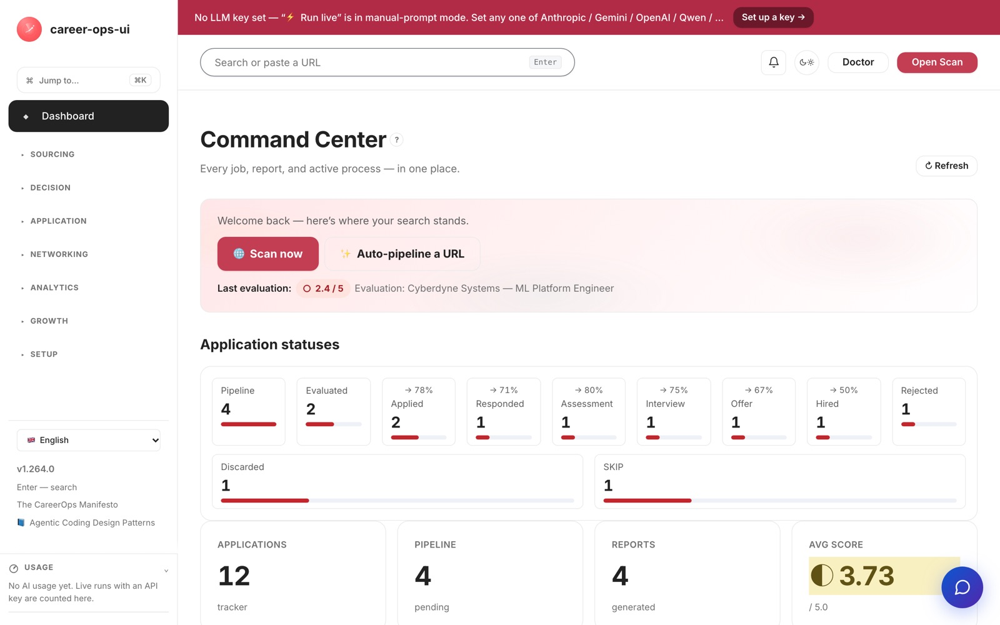
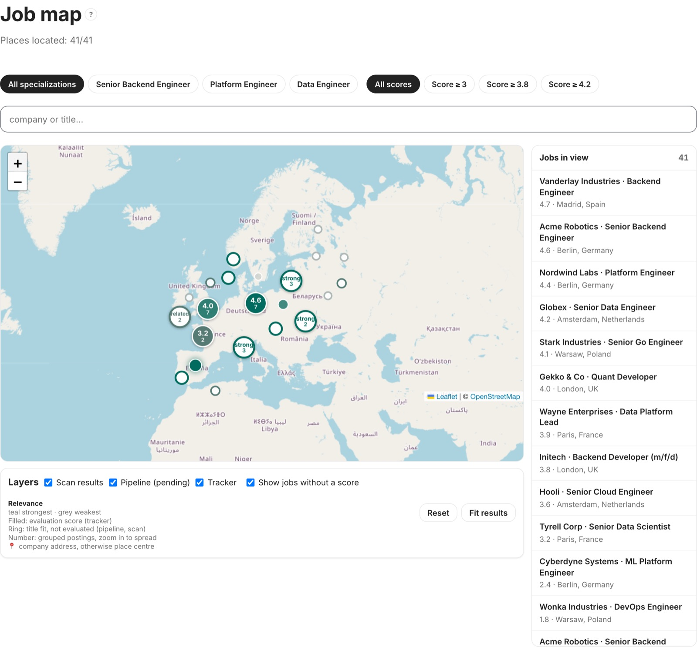
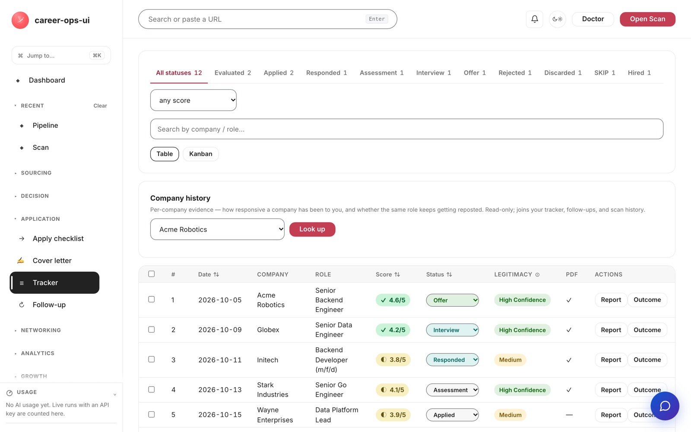

Demo project · steps 1–12
CVStart: from a product lead’s request to a decision with commitments
An end-to-end run of the agent on a live open-source product, cvstart.org: a brief, the resume-builder market, red-teamed options, a RU and EN six-pager with four Excel workbooks, and decision D001. Every number on this page comes from the project files, not from hands.
10 sources20 claimsoptions A–E15 + 5 red-team hits
The brief
The product lead’s task, word for word
The second argument of pfs new is the request without paraphrasing. The agent turns it into a brief, shows it for approval and then runs steps 1–12.
$ pfs new "CVStart: paid version" "Develop a commercial version of the cvstart.org project (an open-source AI resume builder and job search: a scan of 129 job boards, AI scoring, CV Studio, a local pipeline, 19 languages) — resume creation and job search — and a strategy to take it to market worldwide. Product: https://cvstart.org/, repository: https://github.com/Fighter90/career-ops-ui" Created the demo project · scenario: go-to-market · next: intake
The product lead’s request, word for word: “Develop a commercial version of the cvstart.org project (an open-source AI resume builder and job search: a scan of 129 job boards, AI scoring, CV Studio, a local pipeline, 19 languages) — resume creation and job search — and a strategy to take it to market worldwide. Product: https://cvstart.org/, repository: https://github.com/Fighter90/career-ops-ui” The decision the brief targets: pick a commercialization strategy and a global go-to-market plan. Comparison axis: growth in paying subscribers and ARR. Constraints: the open-source core stays MIT, a solo developer, and trust in the local mode is preserved.
The product in this demo
A live open-source product, not a staged showcase
The CVStart product (career-ops UI): a scan of ~129 job boards, AI vacancy scoring 0.0–5.0, CV Studio (resume tuning, humanize, ATS bullets), PDF/DOCX export, cover letters, a tracker, a job map, mock interviews; 100% local; 18 BYOK LLM providers; ~7602 automated tests; MIT license Source: S001 · product screenshots come from the demo project repository.






How the agent worked
Twelve steps. Three decisions are yours.
The agent drove the work on its own, stopping only where a human decides: confirming the brief (step 1), choosing an option (step 7), approving the decision (step 11). The state lives in project files, so breaks and tool changes lose nothing.
Research
- 1Brief
- 2Sources
- 3Research
- 4Segments
Define
- 5Situation
- 6Options and red team
- 7Choice
Develop
- 8Strategies
- 9Validation plan
- 10Quality review
Deliver
- 11Decision
- 12Monitoring
Steps 1–4 · research
an approved brief, 10 sources with no blocked domains, 20 claims with type and grade, segments and persona hypotheses from synthetic interviews.
Steps 5–7 · define
a situation with honest gaps, options A–E including status quo and shut-down, a red team with 15 objections and 5 hidden assumptions, the human choice.
Steps 8–10 · develop
product and communication strategies, a validation plan with thresholds, an independent quality review, a RU and EN six-pager with Excel workbooks.
Steps 11–12 · deliver
decision D001 with grounds and a review date, commitment monitoring left open after the run.
What it found
The market in numbers, with sources
Every number in the registry carries a type, an A–D grade and a source. Card values are cross-checked against claim texts on every build: if the registry changes, the build fails instead of showing stale numbers.
The unoccupied niche is a hypothesis [C013]: a multilingual private open-source AI resume builder, while western competitors cover English plus five languages. Persona hypotheses and the beta funnel are tagged origin=synthetic — hypotheses and method illustrations, not proven demand.
Steps 6–7
Options and red team: five paths, none silent
At least three substantively distinct options, including “keep as is” and “shut it down”. A dedicated subagent attacks each one; its hits are built into the mitigations and the thresholds of the validation plan. The full table with economics lives in 03_options.md.
A · status quo
free open source, nothing changes. Red-team hit: “an expensive hobby” — the MIT license lets a fork monetize your work.
B · hosted freemium SaaS ← chosen
Free (BYOK) / Pro / Unlimited tiers, an opt-in cloud on top of the local MIT core, honest pricing without auto-renewals, locale waves. Hit: community trust in commercializing an open-source core — mitigations: BYOK-free tier, opt-in cloud, honest pricing, stop thresholds.
C · B2B white-label
hosting the resume builder under a partner’s brand. Hit: a solo developer has no sales capability — deferred.
D · dual-license
a paid commercial license on top of open source. Hit: it does not hold up legally on top of MIT — rejected.
E · shut down commerce
the product stays a free OSS project. Hit: walking away from an asset on a growing market.
The agent’s recommendation is not “the best option in general” — it is the best one under the product lead’s constraints: the MIT core stays, solo resources, trust in the local mode is preserved. Conscious rejections: C — no sales capability; D — invalid on top of MIT; E — walking away from a growing market; A — a fork monetizes the work.
Step 11 · decision
D001: CVStart commercial version: hosted freemium SaaS, global
A decision is recorded with grounds, a metric, a commitment, a review trigger and a date — pfs decision add writes it to decisions.jsonl, and pfs next and pfs decision due watch it from then on.
Metric: paying users of the hosted beta — target >=40 by 2027-02-10. Commitment: hosted beta in 3 EN geos (US/EU) — by 2026-12-15. Decision review: 2027-02-10. Trigger: if paying users are below 20 by week 12 with activation below 35%, shut down the commercial track (option E); if GitHub stars fall by more than 30% after the cloud announcement, rework the opt-in communication.
Economics
Paying-user math in live formulas
The demo’s unit assumptions are [C016]; you can change the values on the input sheet of unit_economics.xlsx and the formulas recalculate.
Excel · input sheet
| Pro price | $29/mo |
| 25% variable costs → contribution margin | $21,75 |
| LTV | ≈ $272 |
| LTV / CAC | ≈ 4,5 |
The committee document
A RU and EN six-pager with Excel workbooks
The report follows the FAQ-1…6 structure: market, segments, red-teamed options, tactics, plan and KPIs. Numbers trace back to registry claims; all formats live on the materials page.
- FAQ-1market and trends: size and estimate ranges, the ATS hiring gate, subscription fatigue
- FAQ-2segments, personas and barriers — hypotheses to test in the beta
- FAQ-3options A–E with red-team objections and the B choice
- FAQ-4the tactic matrix: BYOK-free tier, an honest pricing page, CV Studio, a follow-up tracker
- FAQ-5the plan: a 90-day beta with continue / adjust / stop thresholds
- FAQ-6KPIs in two planes: business and product